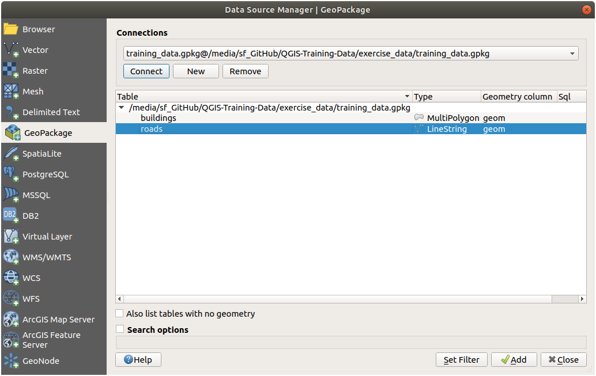
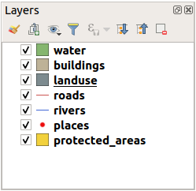

We will start the application, and create a basic map to use for examples and
exercises.
The goal for this lesson: To get started with an example map.
Note
Before starting this exercise, QGIS must be installed on your
computer. Also, you should have downloaded the sample data to use.
Launch QGIS from its desktop shortcut, menu item, etc., depending on how you
configured its installation.
Note
The screenshots for this course were taken in QGIS 3.4 running on
Linux. Depending on your setup, the screens you encounter may well appear
somewhat different. However, all the same buttons will still be available,
and the instructions will work on any OS. You will need QGIS 3.4 (the latest
version at time of writing) to use this course.
The Data Source Manager dialog allows you to choose the data to
load depending on the data type. We’ll use it to load our dataset:
click the Open Data Source Manager button.
If you can’t find the icon, check that the Data Source Manager
toolbar is enabled in the View ► Toolbars menu.
Load the protected_areas.shp vector dataset:
Click on the Vector tab.
Enable the File source type.
Press the … button next to Vector Dataset(s).
Select the exercise_data/shapefile/protected_areas.shp file
in your training directory.
Click Open. You will see the original dialog,
with the file path filled in.
Click Add here as well. The data you specified will now load:
you can see a protected_areas item in the Layers panel
(bottom left) with its features shown in the main map canvas.
Congratulations! You now have a basic map. Now would be a good time to save
your work.
Click on the Save As button:
Save the map under a solution folder next to exercise_data
and call it basic_map.qgz.
Repeat the steps above to add the places.shp and rivers.shp
layers from the same folder (exercise_data/shapefile) to the map.
Answer
In the main area of the dialog you should see many shapes with different
colors. Each shape belongs to a layer you can identify by its color in the
left panel (your colors may be different from the ones in Fig. 2.7 below):
2.2.3. ★☆☆ Follow Along: Loading vector data from a GeoPackage Database
Databases allow you to store a large volume of associated data in one file. You
may already be familiar with a database management system (DBMS) such as
Libreoffice Base or MS Access. GIS applications can also make use of databases.
GIS-specific DBMSes (such as PostGIS) have extra functions, because they need to
handle spatial data.
The GeoPackage open format is a container that
allows you to store GIS data (layers) in a single file.
Unlike the ESRI Shapefile format (e.g. the protected_areas.shp dataset
you loaded earlier), a single GeoPackage file can contain various data (both
vector and raster data) in different coordinate reference systems, as well as
tables without spatial information; all these features allow you to share data
easily and avoid file duplication.
In order to load a layer from a GeoPackage, you will first need to create the
connection to it:
Click on the Open Data Source Manager button.
On the left click on the GeoPackage tab.
Click on the New button and browse to the training_data.gpkg
file in the exercise_data folder you downloaded before.
Select the file and press Open. The file path is now added to the
Geopackage connections list, and appears in the drop-down menu.
You are now ready to add any layer from this GeoPackage to QGIS.
Click on the Connect button.
In the central part of the window you should now see the list of all the layers
contained in the GeoPackage file.
Select the roads layer and click on the Add button.

A roads layer is added to the Layers panel with
features displayed on the map canvas.
Click on Close.
Congratulations! You have loaded the first layer from a GeoPackage.
2.2.4. ★☆☆ Follow Along: Loading vector data from a SpatiaLite Database with the Browser
QGIS provides access to many other database formats. Like GeoPackage, the
SpatiaLite database format is an extension of the SQLite library. And adding
a layer from a SpatiaLite provider follows the same rules as described
above: Create the connection –> Enable it –> Add the layer(s).
While this is one way to add SpatiaLite data to your map,
let’s explore another powerful way to add data:
the Browser.
Click the icon to open the Data Source Manager
window.
Click on the Browser tab.
In this tab you can see all the storage disks connected to your computer
as well as entries for most of the tabs in the left. These allow quick access
to connected databases or folders.
For example, click on the drop-down icon next to the GeoPackage entry. You’ll see the training-data.gpkg file
we previously connected to (and its layers, if expanded).
Right-click the SpatiaLite entry and select
New Connection….
Navigate to the exercise_data folder, select the landuse.sqlite
file and click Open.
Notice that a landuse.sqlite entry has
been added under the SpatiaLite one.
Expand the landuse.sqlite entry.
Double-click the landuse layer or select and
drag-and-drop it onto the map canvas. A new layer is added to the
Layers panel and its features are displayed on the map canvas.
Tip
Enable the Browser panel in View ► Panels ►
and use it to add your data. It’s a handy shortcut for the Data Source
Manager ► Browser tab, with the same functionality.
Note
Remember to save your project frequently! The project file doesn’t contain
any of the data itself, but it remembers which layers you loaded into your map.
The layers in your Layers list are drawn on the map in a certain order. The
layer at the bottom of the list is drawn first, and the layer at the top is
drawn last. By changing the order that they are shown on the list, you can
change the order they are drawn in.
Note
You can alter this behavior using the Control rendering
order checkbox beneath the Layer Order panel. We will
however not discuss this feature yet.
The order in which the layers have been loaded into the map is probably not
logical at this stage. It’s possible that the road layer is completely hidden
because other layers are on top of it.
For example, this layer order…

… would result in roads and places being hidden as they run underneath
the polygons of the landuse layer.
To resolve this problem:
Click and drag on a layer in the Layers list.
Reorder them to look like this:
You’ll see that the map now makes more sense visually, with roads and buildings
appearing above the land use regions.
Now you’re familiar with the basic function of the Open Data Source Manager
button, but what about all the others? How does this interface work? Before we
go on, let’s take a look at some basic interaction with the QGIS interface.
This is the topic of the next lesson.

 Open Data Source Manager button.
Open Data Source Manager button.
 File source type.
File source type.


 GeoPackage tab.
GeoPackage tab. Browser tab.
Browser tab. GeoPackage entry. You’ll see the
GeoPackage entry. You’ll see the  SpatiaLite entry and select
New Connection….
SpatiaLite entry and select
New Connection…. landuse.sqlite entry has
been added under the SpatiaLite one.
landuse.sqlite entry has
been added under the SpatiaLite one. landuse layer or select and
drag-and-drop it onto the map canvas. A new layer is added to the
Layers panel and its features are displayed on the map canvas.
landuse layer or select and
drag-and-drop it onto the map canvas. A new layer is added to the
Layers panel and its features are displayed on the map canvas.